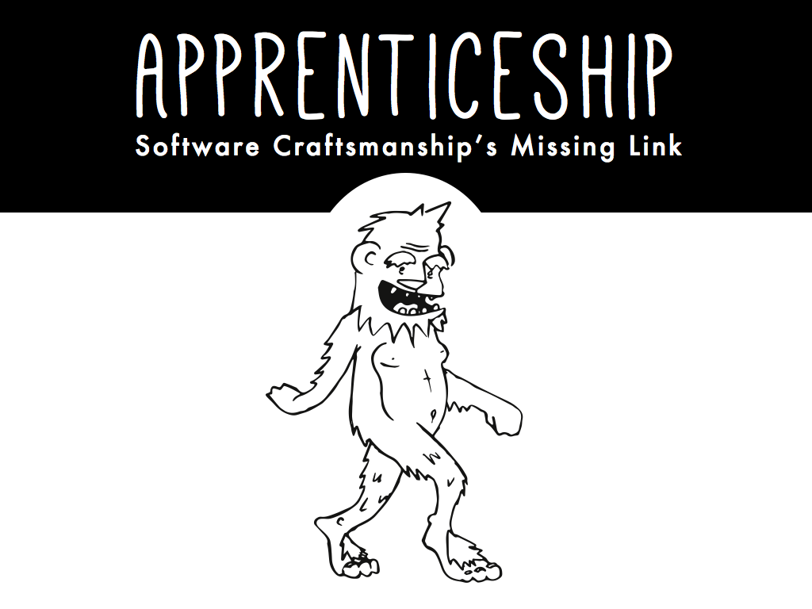
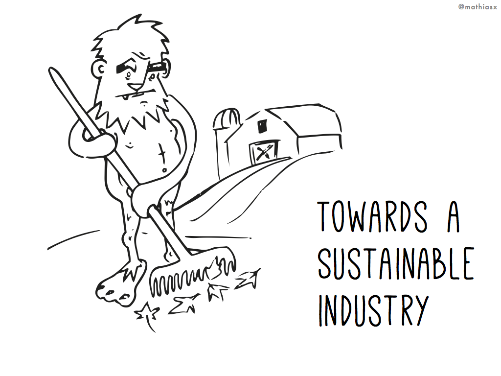
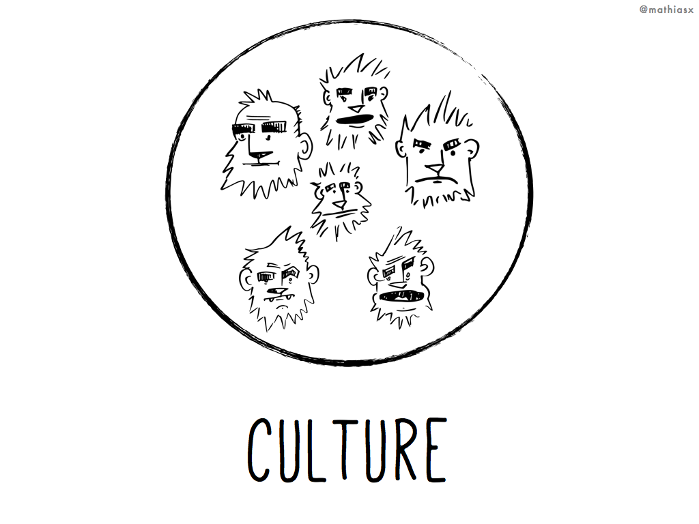
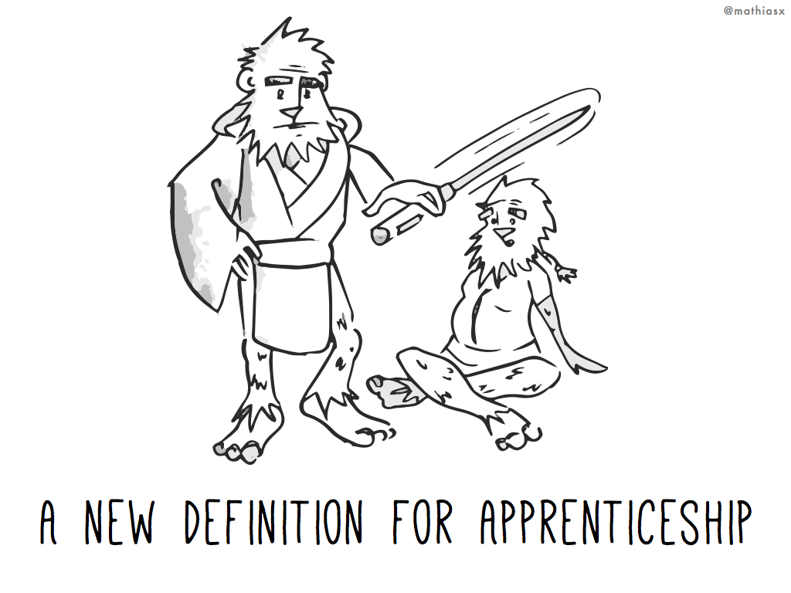
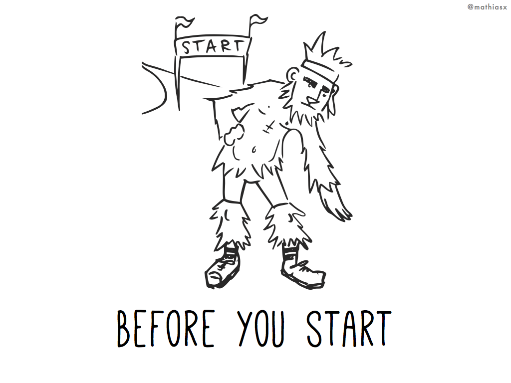
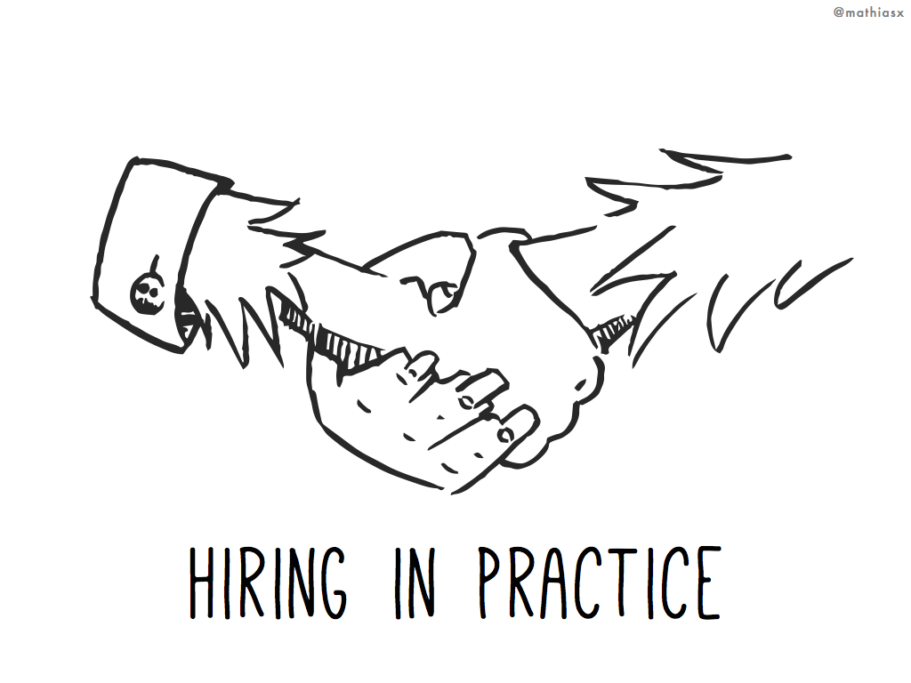
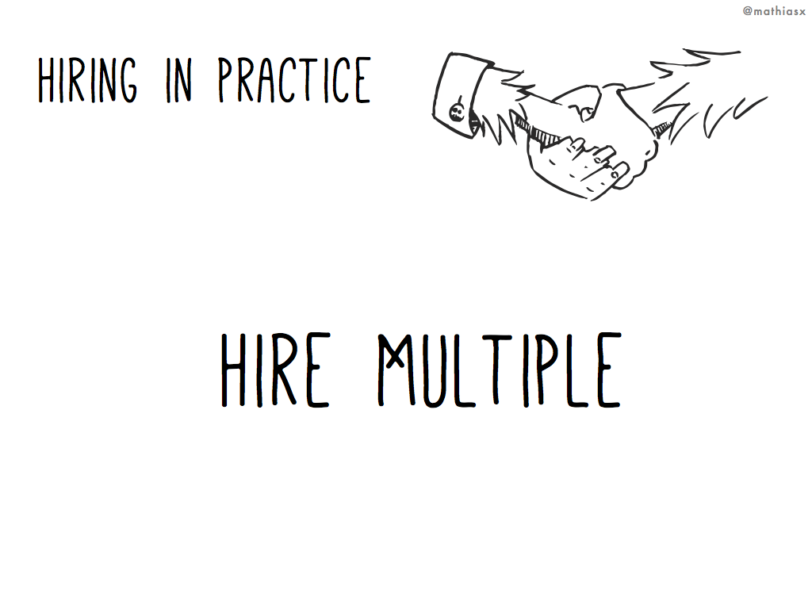
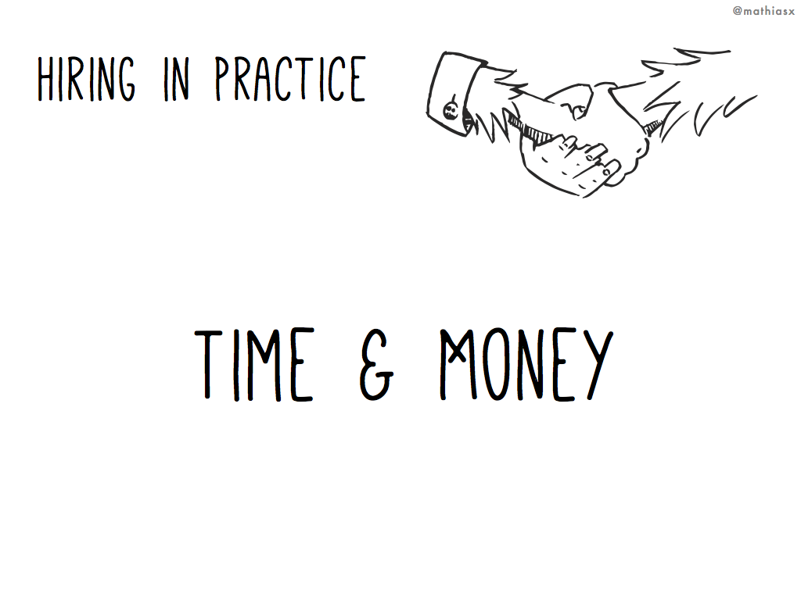
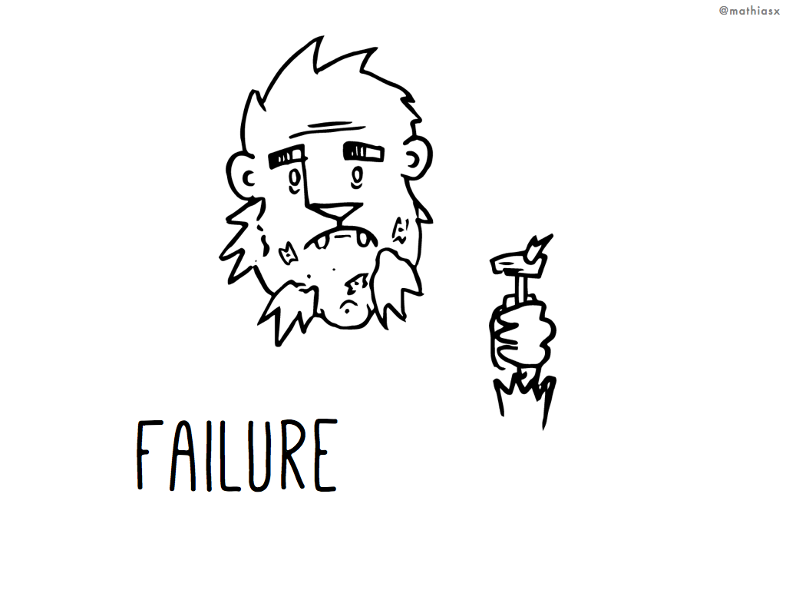
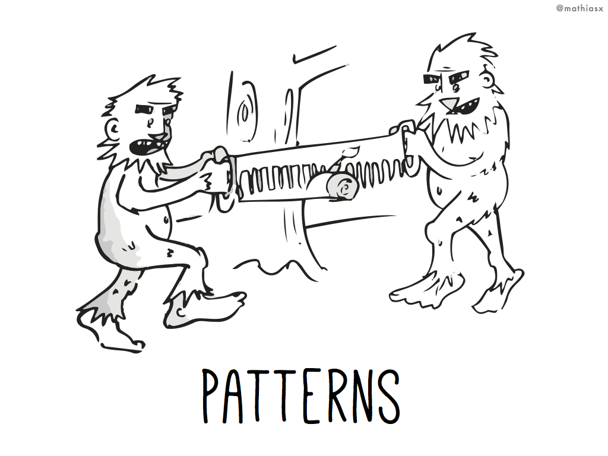

Talk Notes
Hello. I'm Matt Gauger, and I'm a developer at Bendyworks in Madison, WI.
Bendyworks was founded on the ideas of agile & software craftsmanship - it's in our culture, and we talk about it a lot. Over past few years we’ve experimented with adding apprenticeship to our practices.
Today, I'd like to talk about the software craftsmanship movement, and a practice that I'd like to see more regularly used with it: apprenticeship.
Apprenticeship: Software Craftsmanship's Missing Link
The idea of turning software into a craft versus another type of discipline gives us core values that fit very well with the idea of apprenticeship: a lifelong pursuit of learning & improvement; pragmatic processes over "its always been done that way," sharing knowledge, and a willingness to try & fail.
Of all the practices in our toolbelts, apprenticeship should be another tool that we use, when appropriate.
Adding apprenticeships to our practice of software craftsmanship is a key part of building a sustainable industry.
But what do I mean by a "sustainable industry"?
Towards a Sustainable Industry
In farming, we have this idea of permaculture. The idea being that we can build farms that are sustainable:
- they produce the food that people need
- they don't deplete natural resources
- they don't pollute
- and they feed back into themselves to produce next year's crops.
Permaculture in farming is proof that by carefully choosing the practices we implement, we can sustain our livelihood.
Doesn't that sound like a good idea for our industry, too? — A system that helps grow the next generation of developers.
The Sasquatch in the room
There's some big problems with how people enter the tech industry, and how we hire.
The first problem I see is that most companies have an HR department set up to only hire for a set of skills & experience on a resume. We need to get over the idea that a 4-year computer science degree is required for what we do. Or, that we should look for years of experience when we use such rapidly-changing tools.
Instead, I'd like to talk about how we can hire passionate people, full of potential, and train them in the skills we use every day.
Opportunity
The other problem is one of just getting into the field in the first place. A lot of us had opportunities that led us here: there was an Apple II at school, or we had an early internet connection, or we were able to spend our weekends learning Rails.
In any case, we're here, and those particular opportunities allow us to be here.
This is a problem: one of diversity. There's tons of research out there that shows that diverse teams are more creative, better at solving complex problems, and make more profits than their competitors.
But, we rarely focus on diversity. And we should be.
We need to look at diversity on our teams when we talk about software craftsmanship. Software craftsmanship demands that we expose ourselves to new perspectives and new ideas.
Hiring more people like us is not working. It's a monoculture, it's not sustainable.
The missing link is how we bring new developers into the fold: how we teach them what we already know. Our teams all hold a ton of group knowledge, built up over time. But how do we expect the next generation to learn all that?
Culture
To talk about that group knowledge, we need to look at your team's culture. When I talk about culture here, it's not just emacs versus vim or tabs versus spaces.
We need to talk about what you team believes in. What its values are!
Culture includes the things that anyone joining the team will have to learn. And it includes the practices that your team has come to believe in through experience.
Apprenticeship is a method of transferring shared team knowledge, or as we're calling it, culture.
Sure, you could tell someone new to the team to read up on all the practices and values you care about. But what if they just cargo cult the knowledge without understanding why?
Apprenticeship avoids the cargo cult problem by learning while doing.
A new definition for apprenticeship
I'd like to define this term apprenticeship before we move on. When I talk about apprenticeship, people often get the wrong idea in their head.
They might think that apprenticeship means an internship. But we're not having apprentices fetch coffee or do busywork. We want them to do real learning through hands-on work.
Or, someone might think of apprenticeship as a kid in a blacksmith's shop: covered in soot, working in dangerous conditions, earning a subsistence wage, with the hope of a better life. We don't want this, either: we want our apprentices happy, healthy, and earning a living wage, so that they are primed for learning.
So instead, I'd like you to think about the Jedi. And in particular, the Jedi and how they train their Padawans — their apprentices.
For those of you not familiar with this aspect of Star Wars, I'll describe the master-padawan relationship between Yoda and Luke Skywalker shown in The Empire Strikes Back.
Yoda acts as mentor to Luke, helping to tame Luke's recklessness with Jedi meditation and practice. Yoda sets up a number of exercises for Luke. The ultimate goal is for Luke to become a Jedi Master, so that Luke can start solving his development team's real problems, like defeating Vader and saving the galaxy.
By studying under a master, a padawan hopes to learn all the skills & values that the Jedi believe in, so that they too can be Jedi Masters and spread their values throughout the universe.
Isn't that a cool idea? — That we're creating software craftspersons so that they can go & improve software development throughout the universe.
Before you start
In preparing for an apprenticeship program at your company, you should have some conversations as a team to start the planning process.
The first team discussion you should have is to discuss your values & culture. Write down a list of all the things that you team feels is important. Write down some brief notes about why those items are on the list. Consider taking some notes about where those values came from.
The next team discussion you should have is of the skills & practices that apprentices must learn to join your team.
There's a natural tendency to focus on the technical skills you want apprentices to learn. But remember, we're all constantly learning — what test framework you use now will probably change by next year. So instead, trust that your team can teach those skills to apprentices. Don't let technical skills be a speed bump to joining your team!
Instead, focus on listing out the practices related to what you do, and why: how you do project management, how you run meetings, how you work as team.
Deciding on these "soft skills" that you want apprentices to learn is very important.
There's a book from O'Reilly called Apprenticeship Patterns. While it is aimed at apprentices rather than mentors trying to create an apprenticeship program, I think it is a worthwhile read. At Bendyworks, we read it in our group book club as a way to help us improve our apprenticeship program. And I'd say that it will be valuable for your team to read, too.
Expect to learn
About a week ago, I was at my barbershop and describing this talk. And it turns out that my barber was the first apprentice at that barbershop. While my barbershop is modern, it tries to hold to its roots of being a barbershop instead of a salon — I'd say they care about their craft and the practices around cutting hair well.
So my barber was the first apprentice through their apprenticeship, and he told me "They learned as much as I did," on that first apprenticeship.
The takeaway from this story is that you're not going to design a perfect apprenticeship program that will run smoothly the first time. You have to be willing to change and adapt as it goes. But learn from that first apprentice and feed improvements back into process.
Hiring in Practice
Now that we're freed from having to hire for existing experience, now what?
Well, we look for qualities like passion, potential, and self-motivated learning. People that already have a pragmatic approach to problem solving.
The best way to hire these people is not through job ads — look for people that are participating in local meetups. Or, ask your local technical college's instructors if they have any rising stars to recommend. But don't be limited by hiring locally. Look everywhere: github issue queues for projects you work on, Railsbridge workshops, hacker schools, conferences you attend. Go to college job fairs, and when they ask about internship, explain the concept of paid apprenticeship with them.
Ask your team to get contact details for anyone that impresses them. We've found some really good people this way.
When you begin hiring this way, you can start looking for people that complement your team & fill gaps, without worrying about that person's current experience level.
Hire Multiple
When you're hiring, consider fiding 3 apprentices at once — with this number, a mentor can work closely with one apprentice while the other 2 can teach each-other. Or consider more apprentices than just 3. But don't be limited by hiring 1 apprentice at a time.
Time & Money
As far as the length of an apprenticeship, make the decision early and set the expectation from the start with the apprentice. You’re making an investment in them and their growth; you need to be realistic about the cost that you can afford.
Bendyworks has done 3 month trial periods for new hires in the past, so we found that this works well as the length of an apprenticeship, too.
Lastly, you should be paying your apprentices fairly — they're not interns. You don't want them stressed. Instead, you want them able to focus so that they can learn at full potential.
Failure
Be prepared for failure. Like other things in agile, you can iterate & adapt as you go. Eventually, you're going to run into a situation where an apprentice cannot complete the apprenticeship in time.
They should already know from your mentorship that this was coming, and that gives us some time to help them out with the next step in their careers. It's hard to communicate this, but it is important.
When it does happen, offer to make introductions, since you probably know more people in the industry than they do. Let them mention their apprenticeship with you on their resume and online.
At Bendyworks, we had an apprentice that could not finish the apprenticeship. But because improving the process is one of the core ideas in our program, that apprentice gave us feedback that later became The Checklist — a pattern I'll describe in a minute. The Checklist helps ensure the success of all future apprentices.
The takeaway from this is that even in failure, we can find ways to succeed. Learn from failure & improve.
Patterns
Notes to be continued…
Example Checklist
There were a lot of requests to see Bendywork's Checklist. Someday we'd like to open source our apprenticeship materials, but for now, I made a quick example checklist of the kinds of things that our checklist contains.
Note that Level 1 is basic knowledge to pick up, where Level 2 is what we'd like the apprentice to know as a prerequisite to billing on a project.
Remember that the goals for checklist items is that they are demonstrable and achievable. In many cases, for Level 2, we ask that the apprentice explain the topic to us to prove knowledge.
-
Level 1
- Culture:
- Make sure you know everyone's name and they know yours
- Tell a personal story at standup (about anything you want!)
- Introduce yourself to our office neighbors
- Ask each pair to give you an elevator pitch (<45 seconds)
- Attend a project standup with the client. Introduce yourself.
- Attend a project retrospective.
- CSS:
- Explain what the box model is. How is padding different from margin?
- What is SASS? What is SCSS?
- Be able to select various page elements via CSS selectors in a style sheet
- Git:
- Make a new repo
- Commit all changes
- Commit only some changes
- Revise a commit
- Clone a repo from Github
- Push / pull the branch
- Explain
git reset --hard - Make a branch
- Delete a branch locally
- Delete a branch that has unmerged changes
- Delete a remote branch
- Merge a branch
- Resolve a merge conflict
- Snipped sections for HTML, Haml, JavaScript, vim, Unix/terminal skills, and more. I can't list them all out here, but you get the idea. As per my talk notes, don't focus on these too much!
- Culture:
-
Level 2
- Philosophy & Practices
- What does Bendyworks believe in and value, according to you?
- Explain pair programming
- Explain TDD
- Explain BDD. How is it different from TDD?
- Explain Refactoring
- Consulting Skills
- Explain how we maintain customer communication
- Explain estimating
- Explain agile project managment
- Explain extreme programming - history / context
- Explain story carding
- Explain retrospectives
- Run a retrospective meeting internally
- Demonstrate remote pairing knowledge
- Communication Skills / Community
- Writing - write & publish a blog post or other
- Speaking - give a brownbag talk, meetup talk, etc.
- Contribute to an open source project
- Begin mentoring others
- Philosophy & Practices
Links / Resources
Books
- Apprenticeship Patterns: Guidance for the Aspiring Software Craftsman
- Agile Retrospectives: Making Good Teams Great